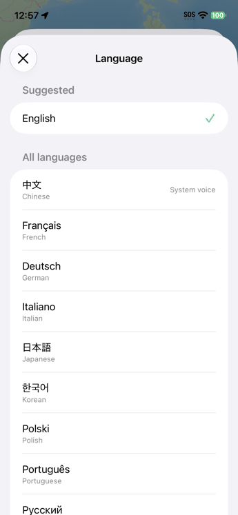

CityYoYo Now Speaks 11 Languages
Drafted with AI assistance — Claude Code — and reviewed by the founder.
CityYoYo started in English, then added Chinese, Korean, Spanish, Portuguese and French. With version 3.18 it adds five more: German, Italian, Japanese, Russian and Polish. That covers both the narration you hear and every screen in the app.
- English
- 中文
- 한국어
- Español
- Português
- Français
- Deutsch
- Italiano
- 日本語
- Русский
- Polski
Why these five
We picked them by looking at who was already using the app. Travelers with phones set to German, Italian, Japanese, Russian and Polish were opening CityYoYo and ChinaWalk and then listening in English. Russian came up most in ChinaWalk, our app for travelers in China. These were the biggest gaps, so they came first.
The whole app, not only the narration
Pick Italiano and the story about the alley you just tapped is told in Italian. The buttons, settings, Tour Mode prompts and city list are in Italian too. Place names on the map follow the narration language as well. If your phone is in English but you want to hear about Tokyo in Japanese, the names under each pin switch to Japanese with it.

It starts in your language
New installs start in your phone's language if it's one of the 11, and in English if it isn't, so there's no hunting through Settings first. If you already use CityYoYo, nothing changes until you choose a different language. The picker shows each language by its own name, with your phone's language suggested at the top.
A better voice on iPhone
On iPhone, CityYoYo's higher-quality AI voice runs on the device and now comes built into the app, so there's no separate voice download before your first tour. That voice covers every language except Chinese, which uses the system voice for now. We also fixed how Japanese narration is split into sentences, so it no longer runs long passages together.
ChinaWalk too
ChinaWalk gets the same 11 languages. For a visitor in Beijing or Xi'an, Chinese place names and the stories behind them now come translated into German, Italian, Japanese, Russian or Polish as well. It still works without a VPN.
Update to 3.18 from the App Store or Google Play, then choose a language in Settings. If you'd like CityYoYo in a language we don't have yet, tell us in an App Store or Play review. We'll use those requests to pick the next ones.
Same idea as always: tap any place, anywhere, and hear its story. Now in more languages.
It's free to download.